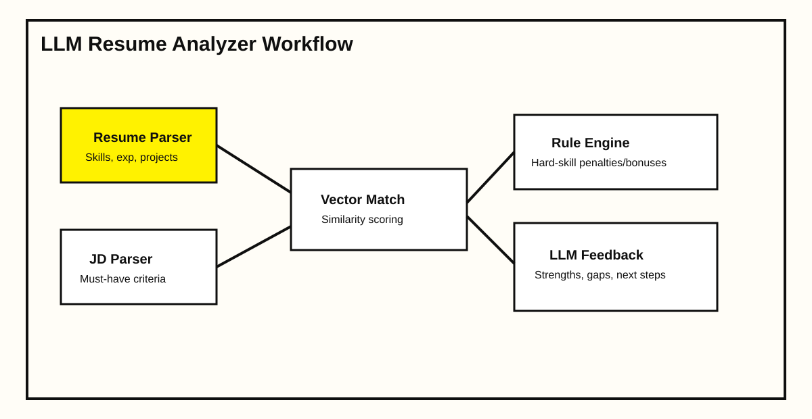

← All case studies
Case study 04 · Applied AI
LLM resume analyzer
Developed a resume intelligence tool that scores candidate fit against role requirements and explains the score in plain language. The objective was faster triage for recruiters and clearer improvement signals for applicants.
−52%Screening time
+28%Shortlist precision
4.6/5Recruiter satisfaction
Project scope
Built a hybrid pipeline combining deterministic parsing, vector similarity, and LLM-generated commentary. The system evaluates must-have skills, seniority evidence, project relevance, and keyword quality in one report.
Architecture

Implementation details
Added confidence scoring and deterministic penalties for missing critical requirements to reduce hallucinated recommendations. Prompt templates were tuned for concise, role-specific feedback that remains readable by non-technical users.